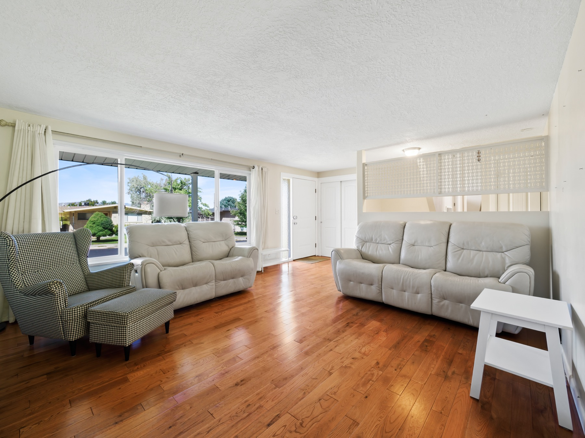
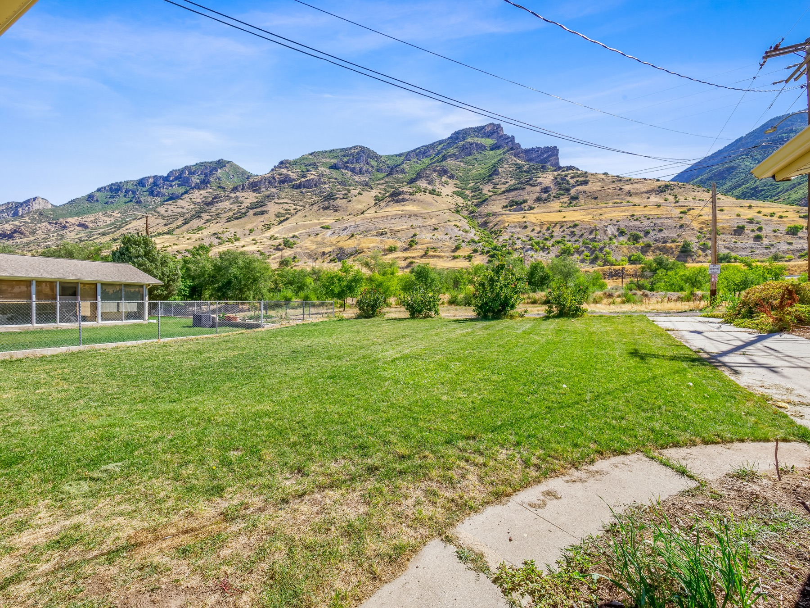

Fully furnished
Furnished living spaces and bedrooms, with kitchen, bath, and linen essentials.
A FURNISHED HOME AT THE FOOT OF THE MOUNTAINS
Settle into a comfortable Provo home, where bright living spaces meet an open mountain backdrop.
ROOM FOR EVERYDAY LIFE
A place to unpack, unwind, and find your rhythm.
With four bedrooms and 1,800 square feet, this furnished home offers space to spread out during an extended stay. Bright living areas, a full kitchen, and comfortable bedrooms make daily life feel familiar from the start.
Outside, the spacious backyard opens to mountain views without other properties blocking the backdrop. It’s an inviting setting for a quiet morning or a moment of fresh air at the end of the day.

A SOFTER LANDING
Gather in the light-filled living room, share a meal in the dining area, or enjoy a separate lower-level lounge. There’s room for downtime, work, and the routines that make a house feel like home.
Take a closer look ↗THE HOME, IN FOCUS
31 photographs. One place to call home.
Select a photo to explore full screen.

THE VIEW THAT STAYS WITH YOU
Open views and an established neighborhood bring a sense of space beyond the front door.
THE EVERYDAY ESSENTIALS
Thoughtful conveniences for an extended stay.
Furnished living spaces and bedrooms, with kitchen, bath, and linen essentials.
Wi-Fi, a dedicated laptop workspace, a smart TV, air conditioning, and heating.
A full kitchen with a full-size refrigerator, dishwasher, microwave, and kitchen essentials.
An in-unit washer and dryer keep everyday routines simple.
Covered parking and free parking on the premises, with a driveway and street parking options.
Pets are allowed. A non-refundable pet deposit applies; confirm arrangements before booking.
WALK THROUGH BEFORE YOU ARRIVE
See the home in motion with the complete video tour.
Use the controls to pause, replay, or watch full screen.
YOUR PROVO HOME BASE
Set in an established older Provo neighborhood with quiet neighbors, this home offers a relaxed setting and a backyard that opens to unobstructed mountain views.
435 S 1450 E
Provo, UT 84606
Explore the map to find routes and nearby places. Travel times vary.
YOUR NEXT CHAPTER STARTS HERE
Planning an assignment, a relocation, or a longer visit to Provo? View the listing and contact the owner through Furnished Finder to confirm dates and arrangements.
Check availability & inquire ↗Opens the property’s Furnished Finder listing.
FURNISHED MONTHLY RENTAL
$3,100 / month
Utilities included
Rates and fees reflect the listing reviewed October 14, 2026. Confirm current terms and availability with the owner.
Furnishings, utilities, Wi-Fi, a full kitchen, and an in-unit washer and dryer.
Yes. The listing includes a $250 non-refundable pet deposit. Confirm pet arrangements with the owner.
The home is non-smoking and has stairs at the entrance and/or inside.